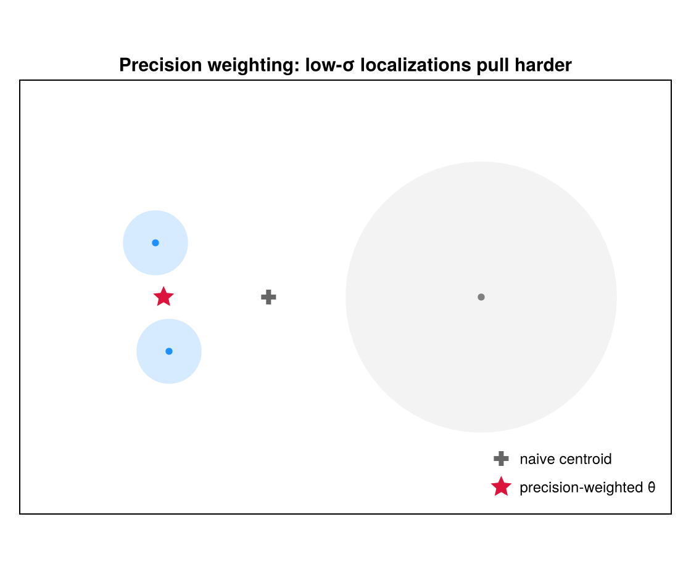
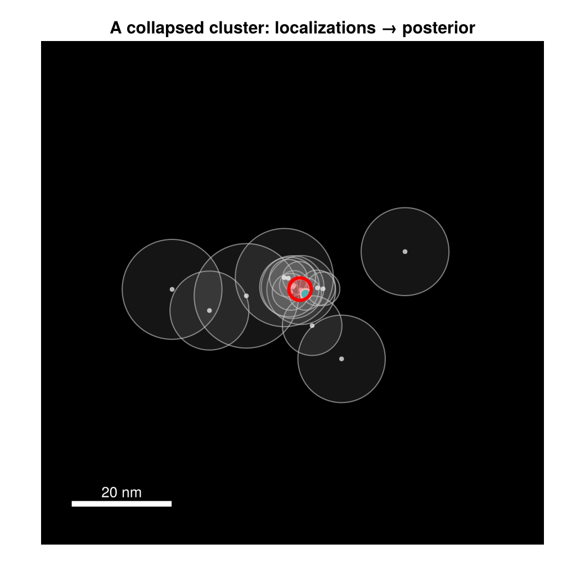

Collapsed Representation
A BaGoL grouping is an allocation: an assignment of every localization to an emitter, written as the vector $\mathbf{z}$ (where $z_i = k$ means localization $i$ came from emitter $k$). That allocation is what BaGoL infers; it then summarizes the result as the MAP-N emitters, with their positions and uncertainties. The grouping is the allocation.
"Collapsed" describes how the sampler represents that grouping. Each emitter's position $\boldsymbol{\theta}_k$ is integrated out analytically — never sampled — so the sampler's grouping state is the discrete allocation $(K, \mathbf{z})$ rather than any continuous positions; the model has been collapsed to a discrete grouping by integrating out the positions. This keeps the moves cheap and the acceptance ratios free of Jacobian terms. (The positions are recovered analytically at the end, for reporting — see Posterior position of a cluster below.)
Sufficient statistics
A cluster is summarized by additive sufficient statistics (the ClusterStats type, cluster_stats.jl). With $\Lambda_i = \Sigma_i^{-1}$ the precision of localization $i$:
\[\Lambda = \sum_{i \in c} \Lambda_i, \quad \boldsymbol{\eta} = \sum_{i \in c} \Lambda_i \mathbf{x}_i, \quad \mathrm{quad} = \sum_{i \in c} \mathbf{x}_i^\top \Lambda_i \mathbf{x}_i, \quad \sum_{i \in c} \log\det\Sigma_i, \quad n = |c|.\]
The localization uncertainty $\sigma$ enters the model only through these statistics — as precision $\Lambda_i$ and through the per-localization log-determinant $\log\det\Sigma_i$ (the Gaussian normalization). For a 2D localization with reported $\sigma_x, \sigma_y$ and covariance $\sigma_{xy}$,
\[\Sigma_i = \begin{pmatrix} \sigma_x^2 & \sigma_{xy} \\ \sigma_{xy} & \sigma_y^2 \end{pmatrix}, \qquad \Lambda_i = \Sigma_i^{-1} = \frac{1}{\det\Sigma_i} \begin{pmatrix} \sigma_y^2 & -\sigma_{xy} \\ -\sigma_{xy} & \sigma_x^2 \end{pmatrix},\]
reducing to $\Lambda_i = \mathrm{diag}(1/\sigma_x^2,\ 1/\sigma_y^2)$ in the diagonal case. Because the statistics are sums, adding and removing a localization are exact $O(1)$ inverses (add_loc / remove_loc) — the operations the Gibbs sweep performs millions of times.

Two low-σ localizations (small blue discs) and one high-σ localization (large gray disc). The precision-weighted mean $\hat{\boldsymbol\theta}$ (red star) sits near the confident pair, not at the naive centroid (gray cross). Larger $\Sigma_i$ ⇒ smaller pull.
Posterior position of a cluster
Under a flat prior on $\boldsymbol{\theta}$, the position posterior is Gaussian with a precision-weighted-centroid mean and inverse-total-precision covariance (ClusterStats posterior_mean / posterior_cov):
\[\hat{\boldsymbol{\theta}} = \Lambda^{-1}\boldsymbol{\eta} = \Big(\textstyle\sum_i \Lambda_i\Big)^{-1}\Big(\sum_i \Lambda_i \mathbf{x}_i\Big), \qquad \widehat{\mathrm{Cov}}(\boldsymbol{\theta}) = \Lambda^{-1} = \Big(\textstyle\sum_i \Sigma_i^{-1}\Big)^{-1}.\]
The covariance is the inverse of the summed precision, so pooling $n$ localizations of comparable quality shrinks the position uncertainty by roughly $\sqrt{n}$ — the super-resolution gain made precise. These two quantities are exactly what the MAP-N output emitters carry as their position and reported uncertainty.
This posterior mean and covariance — the reported emitter position and its uncertainty — come from the flat-prior Gaussian combination and are the same for both spatial models. Choosing :locmix vs :flat changes only the marginal-likelihood score that compares groupings (next page), not the reported emitter uncertainty.

One emitter's localizations (faint gray 1σ discs) collapse to a tight posterior (red 2σ ellipse) sitting on the true position (cyan) — far tighter than any single localization's uncertainty.
Why collapse?
Integrating $\boldsymbol{\theta}$ out yields the cluster's marginal likelihood, the quantity every move scores against. Because the state is purely discrete, every transition is a re-partitioning of localizations, and the acceptance ratio is a ratio of marginal likelihoods and prior factors — no continuous-parameter proposal, no Jacobian. The next page derives that marginal likelihood for both spatial models.
Whenever some parameters can be integrated out exactly, it is usually worth doing: sampling fewer, lower-variance quantities makes MCMC both faster and less noisy — a standard method called Rao–Blackwellization. Here the emitter positions $\boldsymbol{\theta}_k$ are nuisance parameters for the grouping search — recovered analytically as the reported positions once the grouping is fixed. Gaussian conjugacy lets us replace "sample each position, then score" with a closed-form Gaussian marginal per cluster, so the chain explores only the discrete groupings. The same idea underlies the Rao-Blackwellized posterior image, which blurs each cluster by its posterior covariance instead of plotting point estimates.